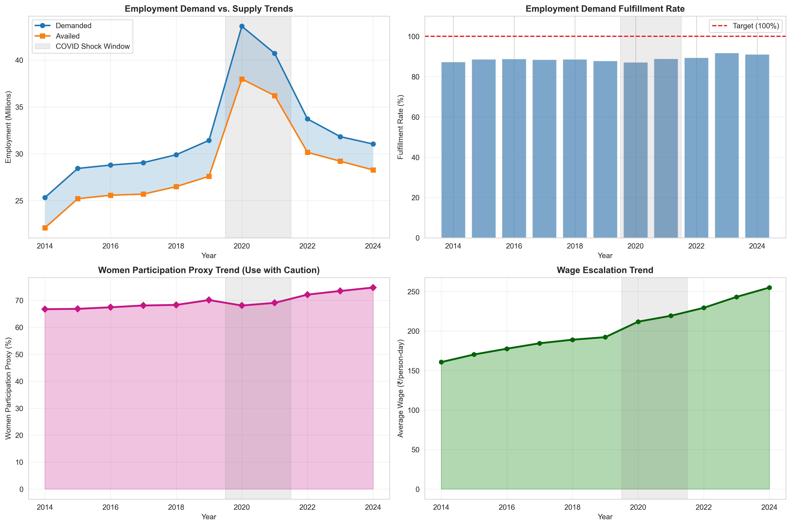
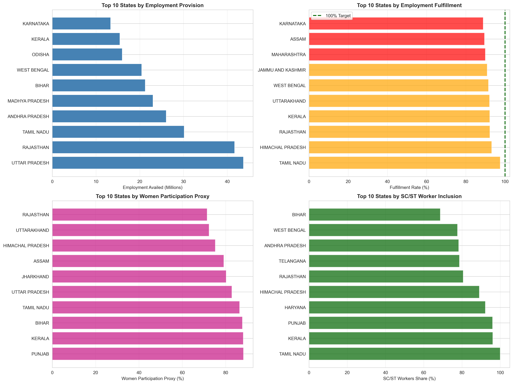
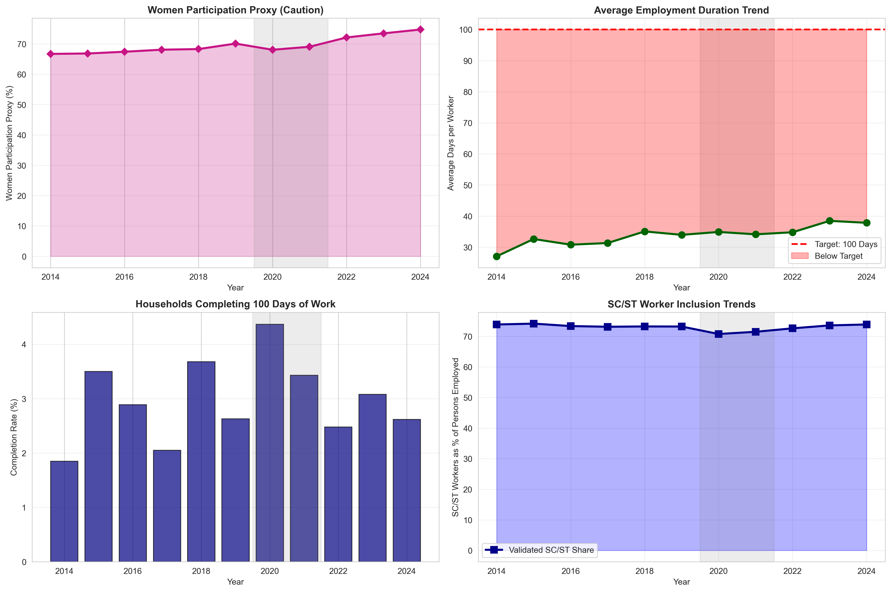
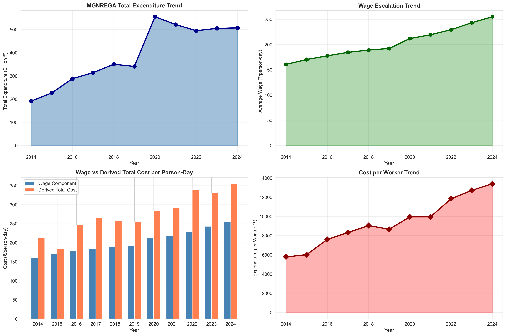
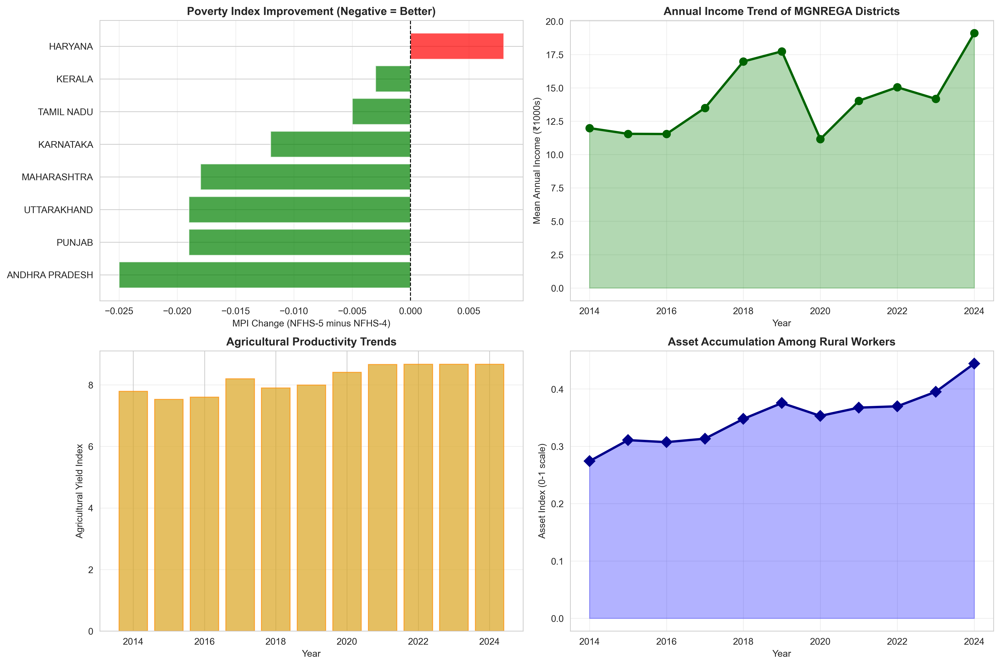
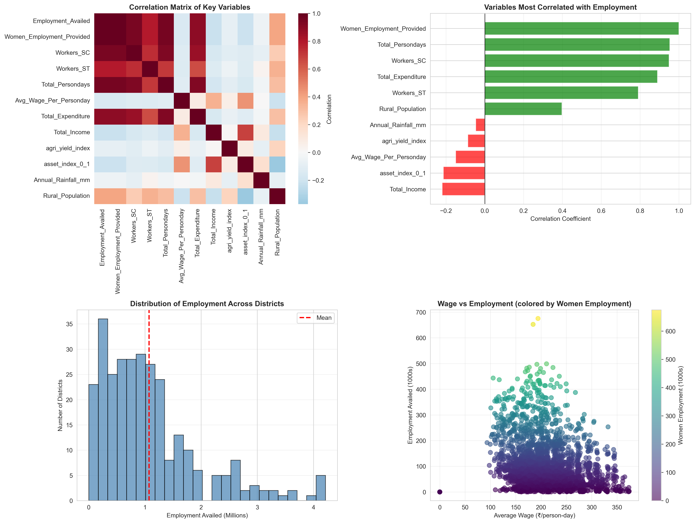
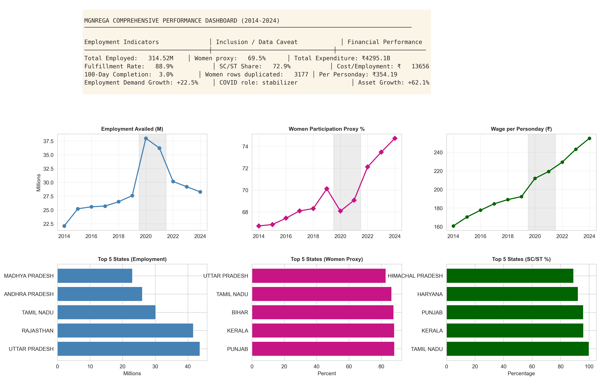

MGNREGA Policy Analysis: Exploratory Data Review (2014-2024)
Keywords: MGNREGA, rural employment, public policy, social protection, fiscal incidence, COVID shock
Abstract
This report summarizes an exploratory data analysis of MGNREGA implementation outcomes over 2014-2024. The evidence indicates substantial program scale, high employment demand fulfillment, and strong SC/ST inclusion after subgroup validation. During the COVID period, labor demand and expenditure increased materially, consistent with a counter-cyclical stabilization role. However, household-level completion of the statutory 100-day entitlement remains low, suggesting partial rather than full employment insurance.
Data and Methodological Notes
The source panel includes yearly district observations spanning program demand, availed employment, person-days, wages, expenditure, social composition, and selected socio-economic indicators. Core indicators were aggregated at annual and state levels for trend and cross-sectional comparisons.
Data-quality controls were embedded in preprocessing. First, SC and ST counts were capped at persons employed when subgroup totals exceeded totals. Second, expenditure was converted from lakh rupees to rupees for financial comparability. Third, the women employment field was retained as a proxy metric with explicit caution due to near-duplication with employment availed.
- Women employment series is a proxy in this dataset and should be triangulated with external gender-disaggregated records.
- Financial interpretation must use corrected rupee conversion from the expenditure column.
- SC/ST shares should rely on validated subgroup totals where inconsistencies occur.
Key Summary Findings
| Dimension | Main finding | Policy implication |
|---|---|---|
| Scale and reach | Large cumulative employment with broad district coverage over 11 years. | MGNREGA remains a foundational pillar of rural labor support. |
| COVID shock response | Demand and expenditure rose during 2020-2021 relative to pre-COVID years. | Program exhibits automatic stabilizer characteristics during shocks. |
| Inclusion | Validated SC/ST participation remains high after subgroup correction. | Maintain social-targeting gains with stronger quality-of-work indicators. |
| Employment security | 100-day completion rates are persistently low. | Improve project continuity and seasonal work planning. |
| Fiscal interpretation | Expenditure unit correction materially changes magnitude estimates. | Institutionalize unit checks in routine monitoring pipelines. |
Figures and Captions







Policy-Oriented Conclusion
The analysis supports three broad policy inferences: first, MGNREGA functions as a meaningful rural shock absorber; second, inclusion outcomes are substantial but must be interpreted through validated subgroup accounting; third, future design should prioritize completion depth and data-governance quality to strengthen inferential reliability.
For academic and administrative use, this document should be read alongside the notebook outputs and data-audit notes. Clicking any figure opens a full-size view for close inspection.